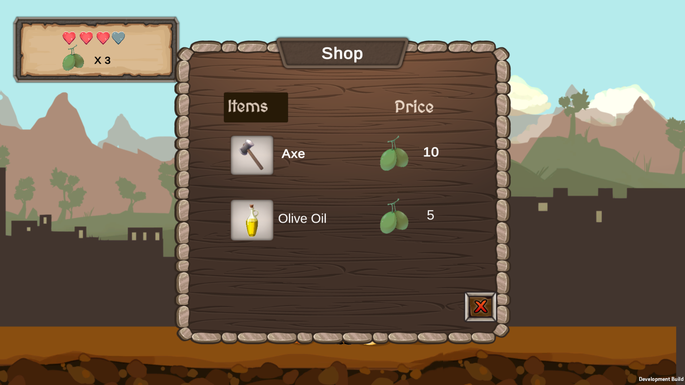
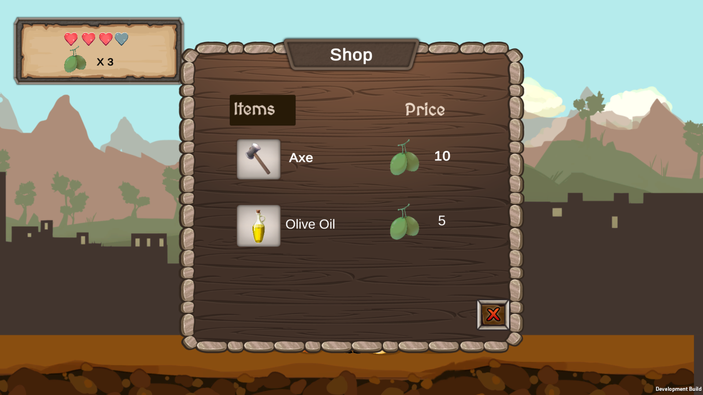
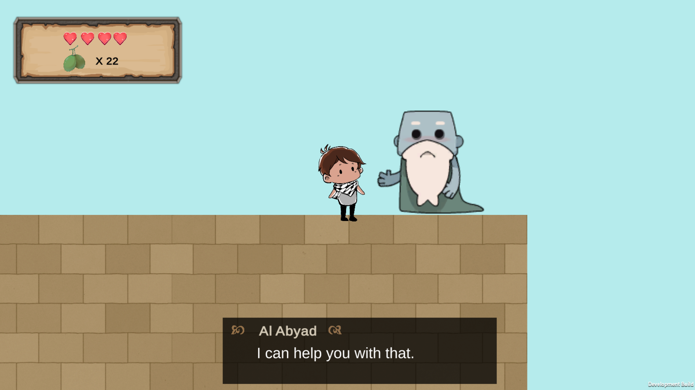
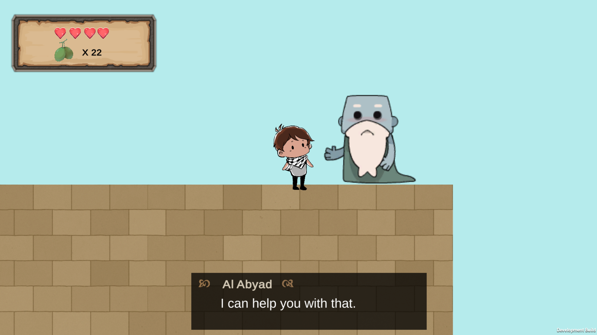
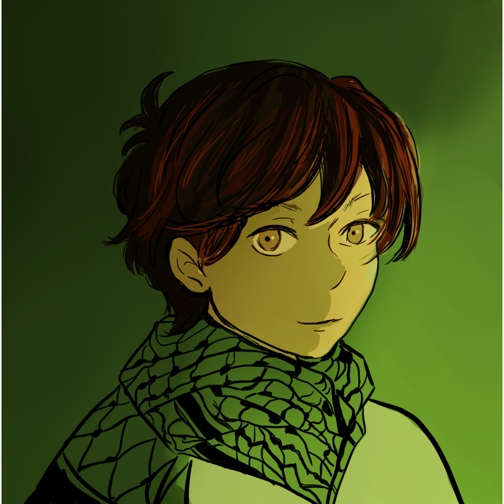
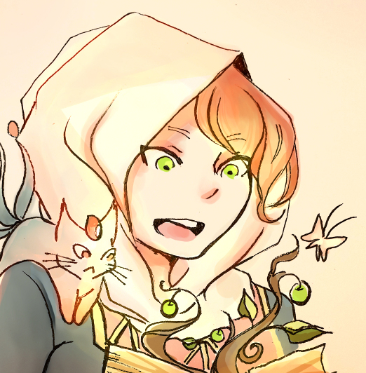

Palestinian folktales includes many stories about mythical creatures, such as Jinn and Ghouls. In "Across The Holy Land", humans, jinn and ghouls share the same land. In the city of Bethelehm, Mahmoud comes home to dicover his brother was taken by Iblis, the ruler of the Jinn kingdom. Following his dad's orders, Mahmoud sets out to get his brother back. He travels the cities of Palestine, faces challenges and puzzles, and meets good characters along the way who help him through his journy.

WELCOME TO PALESTINE
Discover the culture of Palestine

Olive trees
Olives trees are symbolic of Palestinians’ attachment to their land, and they're considered one of the main crops in Palestine

Embroidery
Traditional patterns used in Palestinian embroidery

\
Traditional Wear
Old men wearing traditional Palestinian clothing.

Cities of Palestine
Discover the map of Palestine and learn some interesting facts about two of the cities there. Jerusalem, the heart of Palestine with its beautiful and historical landmarks, and Nablus, known as the Queen of Palestine, a majestic city with a fascinating history.
Discover more!
Palestinian Food
The food of Palestine is a sumptuous array of vibrant and flavoursome dishes, sharing culinary traits with Middle Eastern and East Mediterranean regions. Nonetheless, Palestinian cuisine has its own unique identity, which stands out within the area and across the world.
Check out some recipices!A 2D platform game where you go on a journey through old cities and face obstacles to save your brother
STORY
 

 

Game Characters

Art by Likuro
Mahmoud
Main CharacterMahmoud is a 13 year old boy from Bethlehem, Palestine. He grew up in Dheisha Camp with his little brother, Ribhi. Mahmoud is a witty character, he likes making trouble and skipping school. Even though he's a smart kid, he doesn't put too much effort into homework, it is not his thing.
Secondary Characters
Ismail
Ismail is Mahmoud's father. He is a very traditional man, and has his own backyard where he likes to grow olive and apple trees. While Ismail is known for being generous and kind, he is also a strict man.
Ismail's son gets kidnapped at the time of his sickness, so he had no choice but to send his older son to save his brother.
Al Abyad.
Al Abyad is a mysterious Ginnie who helps Mahmoud during his adventure. What Mahmoud doesn't know is that Al Abyad is Iblis's right hand assistant.
Ribhi
Ribhi is 11 years old. Mahmoud is very protective of his little borther, who is the target of bullying by other kids. Ribhi likes animals & collecting rocks. He had a dog when he was five, but he died two years later. Ribhi was devastated for months.
The reason behind Ribhi's abduction is not known, some say the boy has hidden abilities.
Try The Demo!!
While the game is still under development, a demo is available on the website. Give it a try!

Use fullscreen mode for a better experience
About The Developers
Owl Night
Developer

Likuro
Artist
The green areas of the map are the main two regions in Palestine: West Bank (right) and Gaza Strip (left)

Dome of The Rock in Jerusalem
Jerusalem in English, Al Quds in Arabic.
A Journey in the city of Jerusalem

Nablus City
A Day in Nablus City
About Jerulasem
Jerusalem is revered as the beating heart of Palestine. It is the home of the Dome of the Rock and al Aqsa mosque, one of the most important sites in Islam.
Jerusalem city is intoxicating, inescapable and unforgettable, from the beautiful walls stretching out from Damascus gate to the sensory paradise of the Old City souqs.
About Nablus
Nablus is an important economic governorate to the north of Jerusalem, where there is a great deal of industry involved in olives, such as oil and soap.
The large city is known as the uncrowned Queen of Palestine, due to its majestic beauty and rich history. Towering above the city is Mount Jarzim, where the world’s only settlement of Samaritans still exists.
Nablus governorate is also home to the excellently restored Roman ruins at Sebastiya, which is becoming a very popular day trip for tourists.
Landmarks in Jerusalem

Dome of The Rock
The Dome of the Rock is an Islamic shrine located on the Temple Mount in the Old City of Jerusalem. It is in its core one of the oldest extant works of Islamic architecture.
Find out more
The Old City
The holy city of three different religions, Jerusalem is every bit as beautiful and wondrous as it is twisted. Nowhere in the world is as rich in religious history as Jerusalem’s Old City.
Find out more
Mount of Olives
The Mount of Olives is a mountain ridge east of and adjacent to Jerusalem's Old City. It is named for the olive groves that once covered its slopes.
Find out moreLandmarks in Nablus

Wadi al-Badan
estled in one of the lushest, most picturesque valleys in Palestine is the village of Wadi al-Badan. It is a typical village with a pleasant high street and a small range of shops, until you take into account the breath-taking valley.
Find out more
Jacob's Well
Jacob's Well is a deep well hewn of solid rock that has been associated in religious tradition with Jacob for roughly two millennia.
Find out more
Sebastiya
Sebastiya has become very popular with tourists thanks to the excavated remains of a Roman town and amphitheatre on a nearby hill
Find out moreDiscover some of the most iconic dishes of the Palestinian cuisine
Palestinian cuisine consists of foods from or commonly eaten by Palestinians—which includes those living in Palestine, Jordan, refugee camps in nearby countries as well as by the Palestinian diaspora. The cuisine is a diffusion of the cultures of civilizations that settled in the region of Palestine.